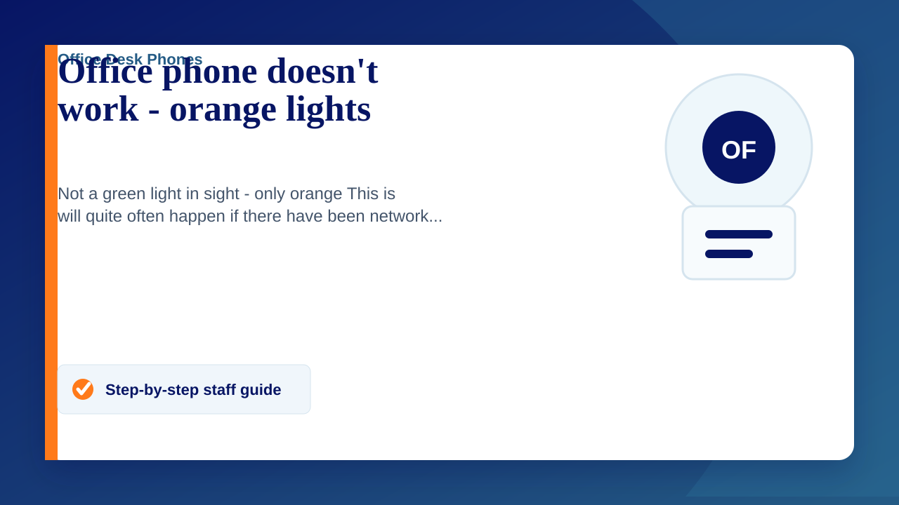

Not a green light in sight - only orange
This is will quite often happen if there have been network issues (power cuts/equipment in your room/server issues)
- This one is normally incredibly easy to resolve. Please refer to this page . (pull the power out wait 5 seconds and then put it back in - some phones take their power over the network cable so you may have to unplug that by squeezing the clip and gently pulling it out. If you take the network cable out please make sure it goes back in the correct socket)
- 9/10 times this will resolve the issue but if not please submit a ticket on the service desk
No green, just red
A red light will indicate it has no network.
- Please check for any loose connections on the cables
- If still not green it may need to reboot so pull the power out wait 5 seconds and then put it back in.
- If you still have issues then please submit a ticket on the service desk